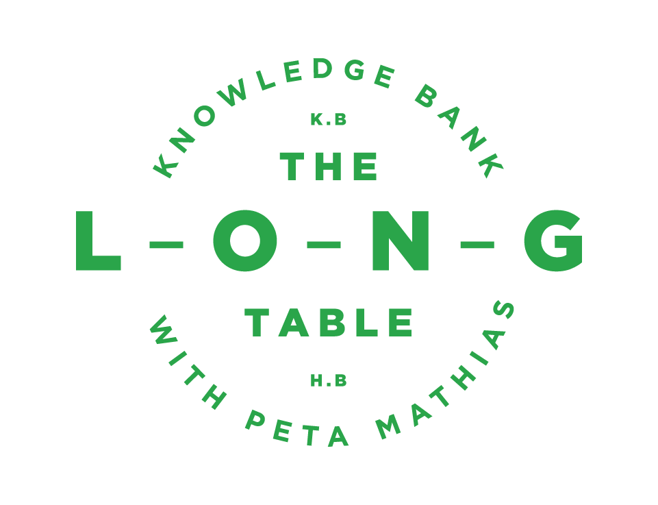
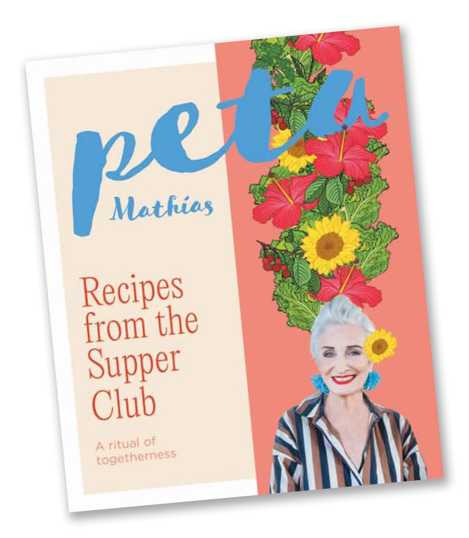

The Long Table with Peta Mathias

The Hawke's Bay Knowledge Bank is setting the table for something rather special, and we’d love you to join us at The Long Table with Peta Mathias.
Join celebrated chef, author and entertainer Peta Mathias for The Long Table, an unforgettable afternoon of beautiful food, wonderful company and storytelling at the stunning Old Church in Meeanee.
Peta will have copies of her new book, Recipes from the Supper Club which has just recently launched. There will also be exciting auction items and incredible food from Ortons as well as a few surprises.
Taking place on to at The Old Church, 199 Meeanee Road, Napier, this special event will bring people together in support of The Hawke's Bay Knowledge Bank, helping preserve the stories and memories of our region for future generations.
Be part of this exciting event.
Add the event to your calendar

Help us by becoming a sponsor
- Align your brand with a respected Hawke’s Bay community organisation
- Connect with an influential audience of business leaders, philanthropists, community leaders and supporters
- Entertain valued clients in a distinctive setting, providing an experience that is personal and memorable
- Build brand visibility
- Develop relationships with other sponsors and community leaders, creating opportunities for valuable business-to-business connections
- Demonstrate community leadership by supporting an organisation whose work benefits current and future generations
- Be recognised for making a tangible difference.